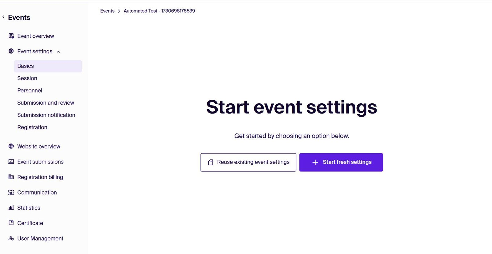
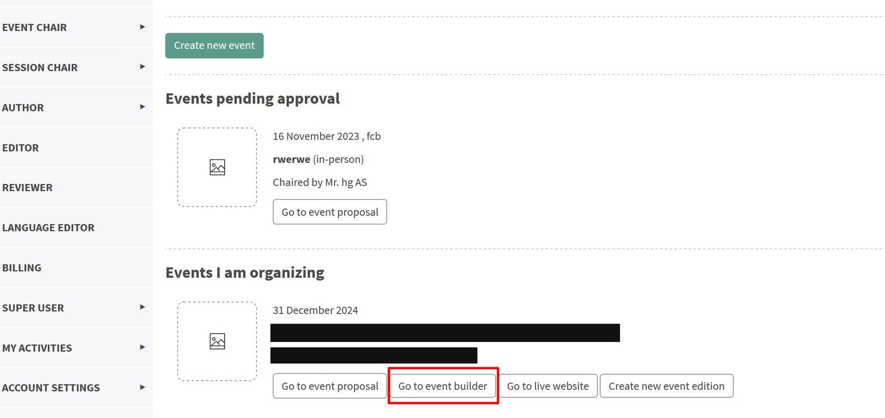
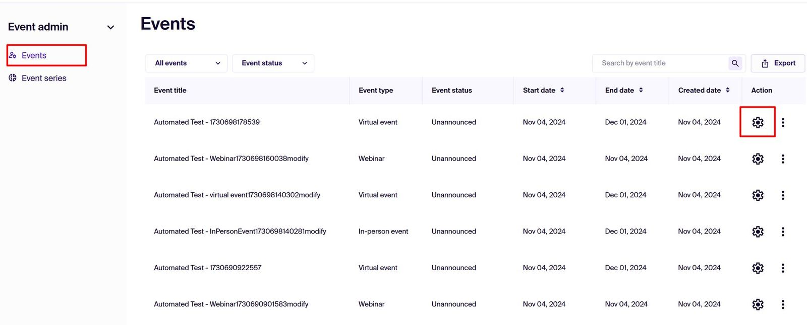
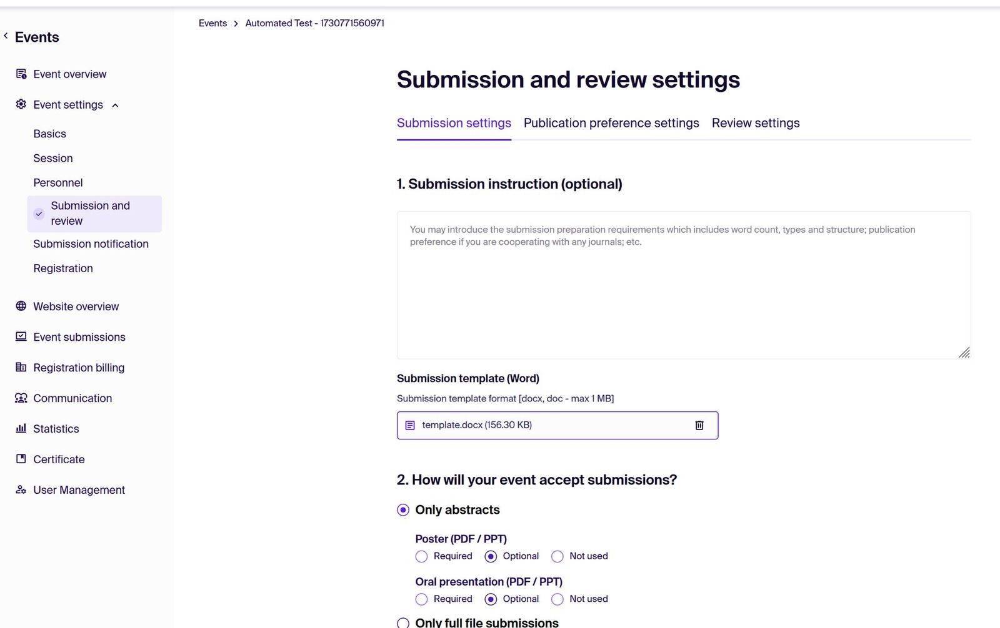
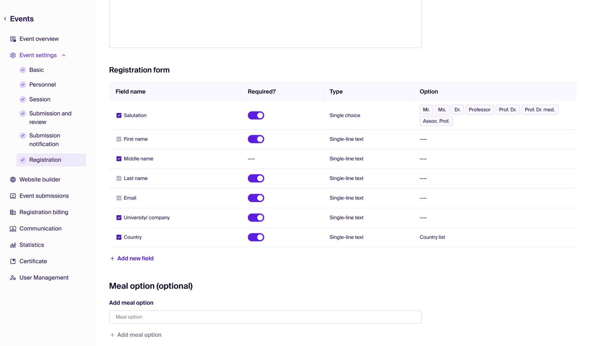
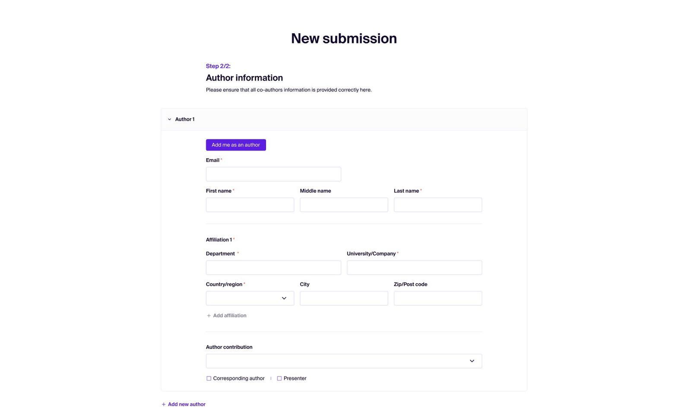
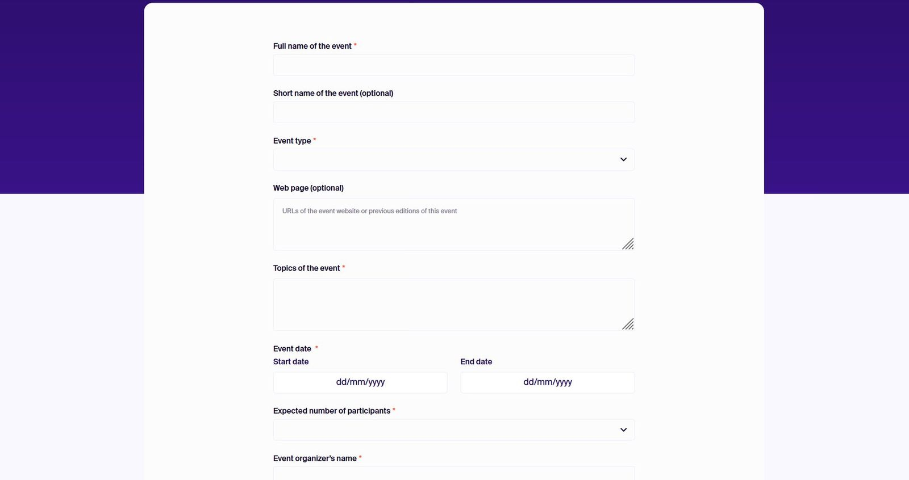
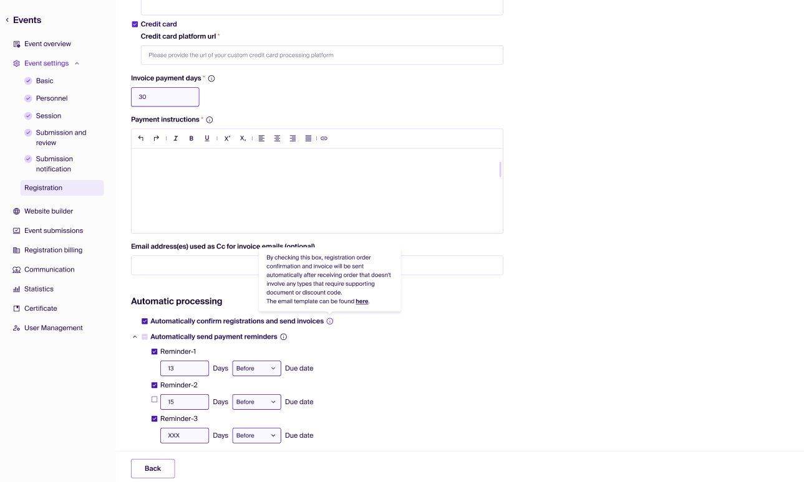
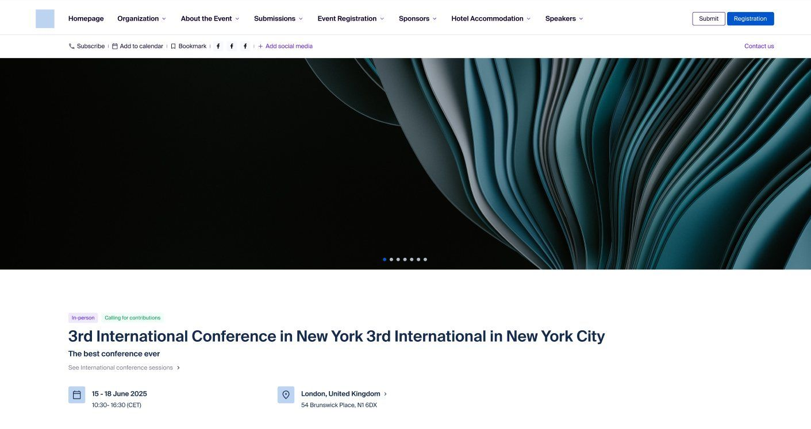
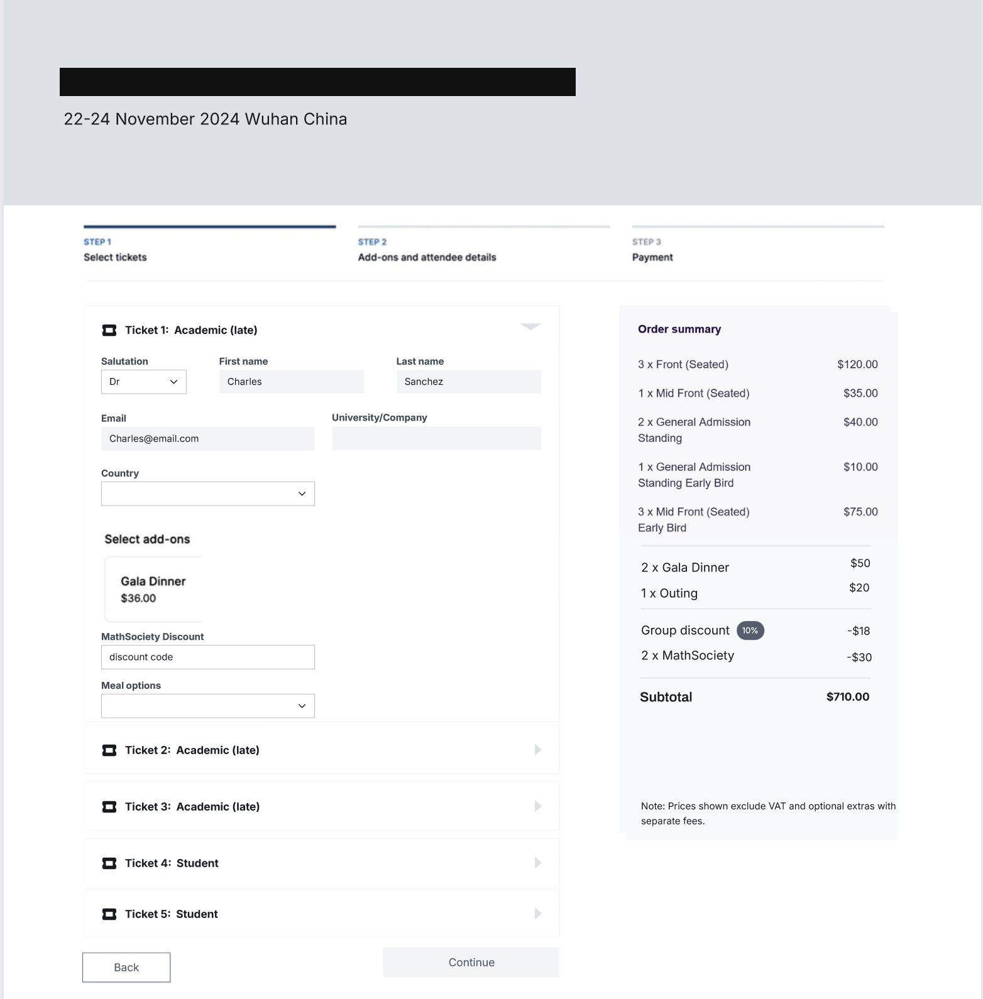

index / case 01 — product design
Atlas
Rebuilding a decade-old academic conference platform into a SaaS product you can buy one module at a time.

An internal tool had to become something strangers would pay for.
The old platform grew up around one internal conference team. Every feature lived in a single back office, menus listed every role at once, and a newcomer had no obvious place to begin. The company wanted to open it to external organisers as a B2B business.
My job was to answer three questions: what external organisers actually need, how the product must be cut to be sellable, and how to swap the whole system without interrupting events already running on it.


BEFOREAFTERListen first, draw second.
I interviewed external organisers, walked the full journey of the old platform with our designer, and kept a running intake of requests from the internal conference team. The external profile was clear: individual scholars already on the platform, working with small budgets.
- Sessions shouldn’t be fixed up front. Organisers want to collect submissions first and shape sessions around what arrives.
- Submitting takes too long. Authors lose the submit button and admins end up submitting on their behalf.
- Pricing makes them anxious. Set tickets too high and nobody comes, too low and the event loses money. They need a cost they can predict.
- No more copying data between tools. They want video conferencing and the publishing workflow connected.
From monolith to modules: what you didn’t buy never appears.
I cut the product into three modules that can be bought on their own: website builder, submissions and review, registration and ticketing. A module you haven’t bought doesn’t show in the menu, so a small workshop that only collects abstracts sees a small product.
The back office became role-based: admins, chairs, editors, reviewers and authors each see their own tools. Event settings run in one line (basics, sessions, people, submissions, review, registration) and every step can be revisited.


Shorten the roads people walk most.
Every core flow went PRD → product review → design → build. A few changes show the thinking:
- Submission went from five steps to two. Author details, then the contribution. Everything else moved to after submit.
- Proposing an event became one page. It asks only what decides whether the event can go ahead. Lower the barrier first, discuss details later.
- Ticketing is configured step by step, and chasing payment is automatic. Reminders fire before the due date; multi-currency invoices and receipts generate themselves.
- Event websites became multi-page. Horizontal navigation replaced one endless home page.





Design how it’s sold alongside how it’s built.
Competitors charge for hosting by the year or by the item. I made “your conference record stays accessible, permanently, at no extra cost” the first sentence of the positioning. Price is the second: entry cost for a mid-sized event sits roughly 80% below the market leader, with each module priced on its own and bundles discounted.
The launch itself was an alignment exercise. I mapped twelve stakeholder groups by power and interest and gave each its own message and timing. Every page on the roadmap moves through the same seven stages, so anyone can see where things are stuck.
Want the full flows and the decision documents? I can walk you through them.
Book a walkthrough →